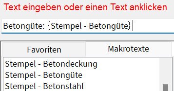

Ein Makrotext ist eine Textvariable, die Sie je nach Kontext in die Zeichnung einfügen können. Der Makrotext wird dabei durch einen variablen Text ersetzt. Sie fügen beispielsweise den Makrotext "Betongüte" in die Zeichnung ein und weisen dem Makrotext den variablen Text "C25/30" zu. An allen Stellen, an denen Sie den Makrotext „Betongüte“ verwenden, wird dieser durch „C25/30“ ersetzt. Wenn Sie den Textinhalt „C25/30“ im Makrotext-Editor ändern, werden alle entsprechenden Textstellen automatisch aktualisiert.
·Makrotexte werden grundsätzlich aus Auswahllisten in Eingaben übernommen und mit speziellen geschweiften Klammern gekennzeichnet. Sie können mit freien Texten, weiteren Makrotexten und Favoritentexten kombiniert werden.
 |
·Sie können dynamische Makrotexte verwenden, die automatisch von ISBCAD aktualisiert werden, wie der Dateiname oder das letzte Speicherdatum der Zeichnung, oder eigene Makrotexte im Makrotext-Editor definieren.
·Benutzerdefinierte Makrotexte können über [Datei | Einfüg] oder die ISBCAD-Zwischenablage [Datei | ZwiAbl | Einfüg] in die aktuelle Zeichnung importiert werden. Im Makrotext-Editor lassen sich Makrotexte als isbmakro-Datei exportieren und importieren, um sie auf andere Zeichnungen zu übertragen. Auch das Übertragen von Makrotexten aus und nach Microsoft Excel ist möglich.
·Makrotexte werden in der Zeichnung hervorgehoben, wenn in einer Abfrage Texte gefangen werden können. Die Hervorhebung können Sie in den Systemdaten auf der Registerkarte Makrotexte anpassen.
Verwenden von Makrotexten:
·Text in Makrotext konvertieren
·Makrotext definieren (Makrotext-Editor)
·Makrotexte bearbeiten (Makrotext-Editor)
·Makrotexte exportieren (Makrotext-Editor)
·Makrotexte importieren (Makrotext-Editor)
·Makrotexte löschen (Makrotext-Editor)
Zugehörige Referenzen:
·Dynamische Makrotexte (Referenz)
·Darstellung von Makrotexten in der Zeichnung (Systemdaten)
Siehe auch:
·Makrotexte in der Planbeschreibung verwenden
·Makrotexte im Speichernamen von Blattrahmen verwenden
·Makrotexte im Speichernamen von Stahllisten verwenden